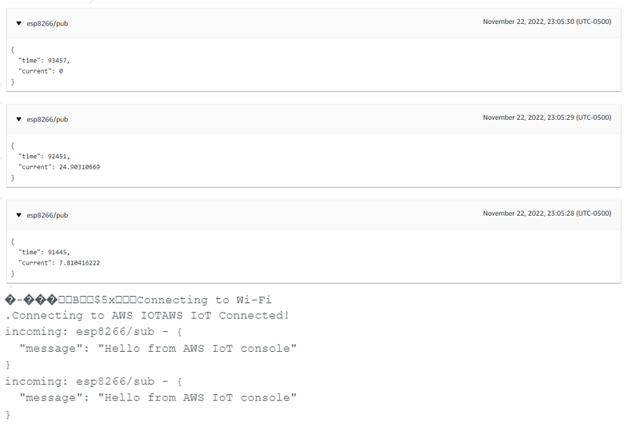

Makerspace IoT - Internet of Things Research
GitHub (May be restricted by GitHub Enterprise)
Makerspace IoT (MSIoT) is a project advised by Dr. Amit Jariwala and the Smart3 Makerspaces Vertically Integrated Project Team. The project involves turning the largest makerspace in the United States, the Flowers Invention Studio into a much safer and optimized workshop through sensor monitoring and the compilation and analysis of data through Internet of Things. Through using the Backend as a Service (BaaS) service in Amazon Web Services and AWS IoT Core, the project aims to create an API which the data can be used for research and improvement of the makerspace.
Other tools which I have spearheaded is the programming of firmware for ESP32 to allow for its connection to AWS IoT Core and AWS MQTT services.
